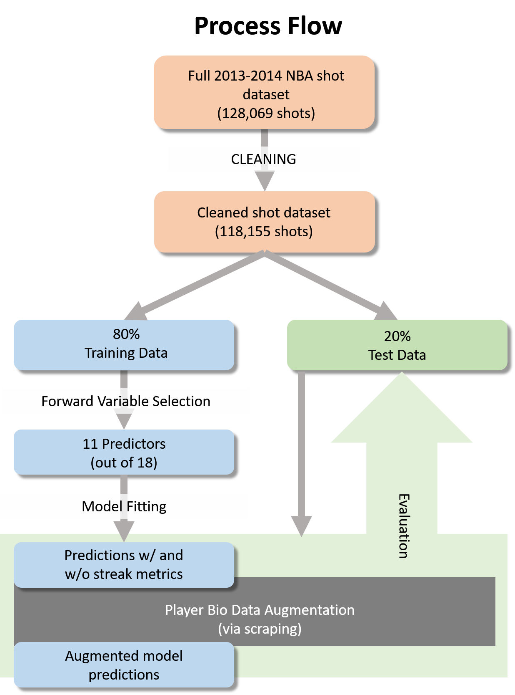

What are the “true” values of individual cards? Are there any properties the Blizard company used to assign values (cost) of these cards? Is there any card undervalued/overvalued by the company?
In this stage, we aimed to estimate the value of each card independently, only considering the basic information from the card itself, i.e. attack, health, special ability.
What is the balance between low cost cards and high cost cards?
The card a player can use is restricted by the number of mana he/she has for that turn, starting from 1 at the beginning and will reach to a maximum of 10 since the 10th turn. If there is no card with cost less than or equal to the number of mana in that turn, the player cannot use any card. Note that without this consideration, we may choose all 30 cards to be with very high cost – however, we are not able to use them in the first several turns. If the opponent do have small cards, we may be attacked to death before we could ever use any card. We aimed to simulate the possibilities of playing a card in the first 5 turns.
Are there any “core” combination of cards?
We aimed to estimate the correlation between cards in certain decks of a specific hero and hope to create card combinations based on principal component analyses. In deciding the number of core cards, we also want to explore the number of drawing cards we need, in order to be able to get the core cards in the random drawing during the game.
Are we able to build a powerful deck (30 cards) for some heros?
With all our analysis in previous stages, we aimed to build potentially powerful decks for certain heros.

Test the deck we built!
We can test our model by simulating games (or playing real games) using the deck and strategy we developed, and calculate its percentage of winning.